Part II(c): Inline Elements
Part II(c): Inline Elements
DAISY 3 Structure Guidelines
Last Revised: June 4, 2008
Inline elements are the structures that occur inside the block elements described in the previous chapter. For example, the inline element <sent> (sentence) would occur inside the block element <p> (paragraph), and the inline tags <abbr> (abbreviation) and <acronym> would occur inside the inline element <sent> (or inside <p> if sentences were not tagged).
IMPORTANT: Page numbers and references to notes are items that provide navigation points for the end user. There is no requirement to provide these, but it is strongly recommended that these be included for text books.
Information Object: Anchor
Definition
An anchor points to another place within the document (as identified by an ID attribute), to another document, or to a specific point in another document. A link is made up of a pair of anchors, with one being the "source" anchor, and the other being the "destination" anchor.
When using an anchor to reference another location within the same document, the anchor must include a pound sign (#) followed by the name of an identifier unique in that document. When using a link to reference a location within a different document, the href attribute must include the name of an external document or file, or the name of an external file followed by a pound sign (#) followed by a unique identifier in the external document. External links without the pound sign and unique identifier will open the document and position the user at the beginning.
Syntax
Link Anchor: <a href="uri">Text of reference</a>
Examples
Example 1 - Internal Reference
The beginning of a recipe might be marked as follows so it could be easily referenced from other parts of the book:
<level3>
<h3><a id="red_sauce">Classic Red Sauce</a></h3>
<!-- ... -->
</level3>
A cross-reference to this recipe would be tagged as follows:
<p>For a simple, delicious alternative, try the
<a href="#red_sauce">Classic Red Sauce</a> on page 109.</p>
Selecting the text "Classic Red Sauce" of the link anchor would position the user at the beginning of the heading of that recipe.
Example 2 - External File Reference
Assuming that a large cookbook was published in two volumes, a reference from Volume One to Volume Two might be marked as follows:
<p>The basic recipes that every aspiring Italian cook should know will
be found in <a href="italian_cooking/vol2.xml">Volume Two.</a></p>
Selecting the anchor text "Volume Two" would open that volume and position the user at its beginning.
Example 3 - External File Reference With A Unique Identifier
Referencing a specific recipe in Volume Two, for example, Classic Red Sauce, from a point in Volume One would be marked as shown below.
The recipe in Volume Two would be marked exactly as shown in Example 1 above:
<level3>
<h3><a id="red_sauce">Classic Red Sauce</a></h3>
...</level3>
The cross-reference in Volume One would be marked:
<p>See <a href="italian_cooking/vol2.xml#red_sauce">Classic
Red Sauce</a> in Volume II, page 109.</p>
Selecting the anchor "Classic Red Sauce" will open Volume Two and position the user at the beginning of the heading of the recipe.
New in the 2005 release of the DAISY Standard: The "external" attribute, which can hold values of "true" or the default "false," indicates whether the external media must be rendered by an external application.
Example 4
This example would launch the given address in a web browser when selected:
<a href="http://www.daisy.org/" external="true">DAISY homepage</a>
Information Object: Abbreviation
Definition
A shortened form of a word. For example: amt for amount, rec'd for received, mlle. for mademoiselle, doz. for dozen, oz. for ounce, cwt for hundred-weight. (See also Information Object: Acronym).
Syntax
<abbr>...</abbr>
Examples
Example 1
<p>His letter of March 4, 1816 to Thornton indicates that he did, in
fact, receive the disputed shipment of grain: <abbr>Rec'd</abbr>
today 500 <abbr>lbs.</abbr> barley delivered by your carter.
Payment in <abbr>amt</abbr> of 3 dollars will be forwarded in the
care of <abbr>M.</abbr> de la Grange.</p>
Illustrated Example 1
Page Sample:
(Show/Hide)
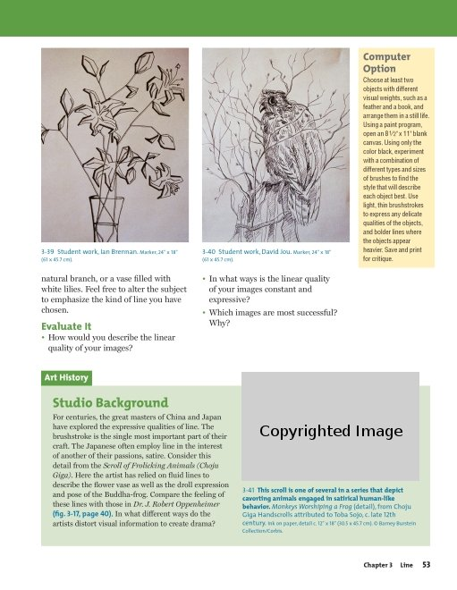
Page 53 from The Visual Experience (0-87192-627-X) by Davis Publications
Sample Code:
(Show/Hide)
<level5>
<pagenum id="IDANOLN">53</pagenum>
<p>natural branch, or a vase filled with white lilies. Feel free to
alter the subject to emphasize the kind of line you have chosen.</p>
<sidebar render="optional">
<hd>Computer Option</hd>
<p>Choose at least two objects with different visual weights, such as
a feather and a book, and arrange them in a still life. Using a paint
program, open an 8 1/2" x 11" blank canvas. Using only the color black,
experiment with a combination of different types and sizes of brushes
to find the style that will describe each object best. Use light,
thin brushstrokes to express any delicate qualities of the objects,
and bolder lines where the objects appear heavier. Save and print
for critique.</p>
</sidebar>
<imggroup>
<img src="images/p053-001.png" alt="Ian Brennan, marker drawing"
width="198" height="261"/>
<caption>3-39 Student work, Ian Brennan. Marker, 24" x 18" (61 x 45.7
<abbr>cm</abbr>).</caption>
</imggroup>
<imggroup>
<img src="images/p053-002.png" alt="David Jou, Marker drawing"
width="198" height="261"/>
<caption>3-40 Student work, David Jou. Marker, 24" x 18" (61 x 45.7
<abbr>cm</abbr>).</caption>
</imggroup>
</level5>
<level5>
<h5>Evaluate It</h5>
<list type="ul">
<li> How would you describe the linear quality of your images?</li>
<li> In what ways is the linear quality of your images constant and
expressive?</li>
<li>Which images are most successful? Why?</li>
</list>
</level5>
<level5>
<h5>Art History - Studio Background</h5>
<p>For centuries, the great masters of China and Japan have explored
the expressive qualities of line. The brushstroke is the single most
important part of their craft. The Japanese often employ line in
the interest of another of their passions, satire. Consider this
detail from the <em>Scroll of Frolicking Animals (Choju Giga).</em>
Here the artist has relied on fluid lines to describe the flower
vase as well as the droll expression and pose of the Buddha-frog.
Compare the feeling of these lines with those in <em>Dr. J. Robert
Oppenheimer</em><strong>(<abbr>fig.</abbr> 3-17, page 40).</strong>
In what different ways do the artists distort visual information
to create drama?</p>
<imggroup>
<img src="images/p053-003.png" alt="Monkeys worshiping a frog from
Choju Giga Handscrolls" width="236" height="146"/>
<caption>3-41 <strong>This scroll is one of several in a series that
depict cavorting animals engaged in satirical human-like
behavior.</strong> <em>Monkeys Worshiping a Frog</em> (detail),
from Choju Giga Handscrolls attributed to Toba Sojo, <abbr>c.</abbr>
late 12th century. Ink on paper, detail <abbr>c.</abbr> 12" x 18"
(30.5 x 45.7 <abbr>cm</abbr>). <sup>©</sup> Barney Burstein
Collection/Corbis.</caption>
</imggroup>
</level5>
Illustrated Example 2
Page Sample:
(Show/Hide)
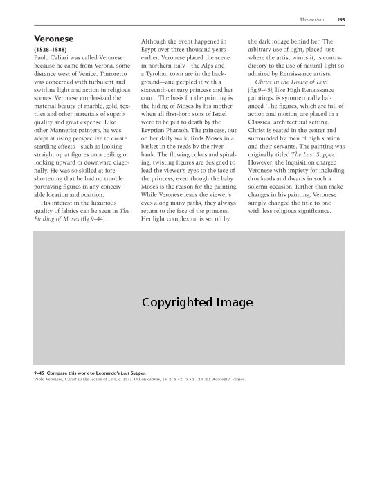
Page 295 from Discovering Art History (0-87192-719-5) by Davis Publications
Sample Code:
(Show/Hide)
<level3>
<pagenum id="IDAYVLN">295</pagenum>
<h3>Veronese</h3>
<p><strong>(1528-1588)</strong></p>
<p>Paolo Caliari was called Veronese because he came from Verona,
some distance west of Venice. Tintoretto was concerned with
turbulent and swirling light and action in religious scenes.
Veronese emphasized the material beauty of marble, gold,
textiles and other materials of superb quality and great
expense. Like other Mannerist painters, he was adept at using
perspective to create startling effects--such as looking
straight up at figures on a ceiling or looking upward or
downward diagonally. He was so skilled at foreshortening that
he had no trouble portraying figures in any conceivable
location and position.</p>
<p> His interest in the luxurious quality of fabrics can be seen
in <em>The Finding of Moses</em> (<abbr>fig.</abbr> 9-44).
Although the event happened in Egypt over three thousand years
earlier, Veronese placed the scene in northern Italy--the
Alps and a Tyrolian town are in the background--and peopled
it with a sixteenth-century princess and her court. The basis
for the painting is the hiding of Moses by his mother when
all first-born sons of Israel were to be put to death by the
Egyptian Pharaoh. The princess, out on her daily walk, finds
Moses in a basket in the reeds by the river bank. The flowing
colors and spiraling, twisting figures are designed to lead
the viewer's eyes to the face of the princess, even though
the baby Moses is the reason for the painting. While Veronese
leads the viewer's eyes along many paths, they always return
to the face of the princess. Her light complexion is set off
by the dark foliage behind her. The arbitrary use of light,
placed just where the artist wants it, is contradictory to
the use of natural light so admired by Renaissance artists.</p>
<p><em>Christ in the House of Levi</em> (<abbr>fig.</abbr> 9-45),
like High Renaissance paintings, is symmetrically balanced.
The figures, which are full of action and motion, are placed
in a Classical architectural setting. Christ is seated in the
center and surrounded by men of high station and their
servants. The painting was originally titled <em>The Last
Supper.</em> However, the Inquisition charged Veronese with
impiety for including drunkards and dwarfs in such a solemn
occasion. Rather than make changes in his painting, Veronese
simply changed the title to one with less religious
significance.</p>
<imggroup>
<img src="images/U14C04/p295-001.png" alt="Paolo Veronese,
Christ in the House of Levi" width="540" height="231"/>
<caption><strong>9-45 Compare this work to Leonardo's Last
Supper.</strong></caption>
<caption>Paolo Veronese, <em>Christ in the House of Levi,</em>
<abbr>c.</abbr> 1573. Oil on canvas, 18' 2" × 42' (5.5 ×
12.8 <abbr>m</abbr>). Academy, Venice.</caption>
</imggroup>
</level3>
Information Object: Acronym
Definition
A word formed from the initial letter or letters of a group of words. For example: UNESCO, NATO, XML, EU, A.D.A., URI, MPEG, SCSI. (See also Information Object: Abbreviation)
Markup
In a given language some acronyms are normally pronounced (e.g., UNESCO and NATO in English), while others are spelled out letter by letter (XML, EU, and A.D.A., again in English). Some acronyms are partly spelled and partly pronounced (MPEG, in English). Many braille codes require acronyms to be identified for proper translation. Speech synthesizers may benefit from marking up acronyms as normally pronounced or normally spelled out, in a given language. Use the "pronounce" attribute to identify an acronym as normally pronounced in the language of the target audience (pronounce="yes") or not normally pronounced in that language (spelled out instead) (pronounce="no"). Acronyms that are, in the target language, commonly partially spelled and partially pronounced (MPEG) or pronounced in a way that is not easily derivable from the acronym (SCSI), should be marked as not pronounced (pronounce="no"). Words which were originally acronyms but have become words in their own right need not be marked (e.g., radar, scuba).
Syntax
DTD Reference
<acronym>...</acronym>
Examples
Example 1
<p>Although the passage of the <acronym pronounce="no">A.D.A.</acronym> promised great benefits to
disabled Americans, many of those benefits have been slow to materialize
in the <acronym pronounce="no">U.S.</acronym></p>
<p>There are those who maintain that the impact of <acronym
pronounce="no">XML</acronym> on the World Wide Web (<acronym
pronounce="no">WWW</acronym>) in comparison with <acronym
pronounce="no">HTML</acronym> will be comparable to the advances
in personal computing made possible by the move from <acronym
pronounce="yes">DOS</acronym> to Windows.</p>
Illustrated Example 1
Page Sample:
(Show/Hide)
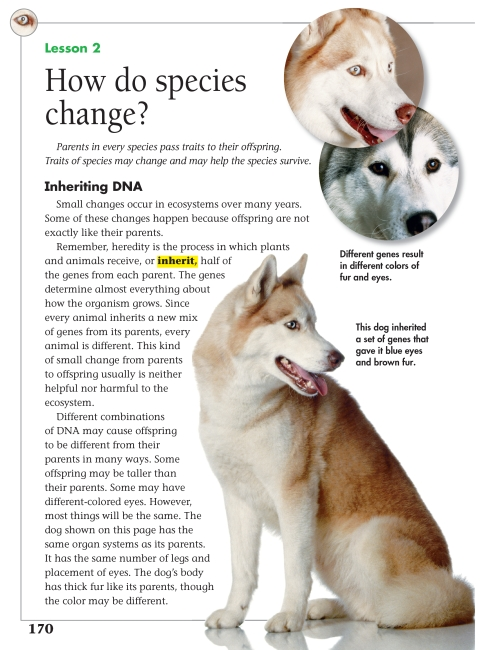
Page 170 from Science (0-328-34506-2) by Pearson Scott Foresman
Sample Code:
(Show/Hide)
<level3>
<pagenum id="IDANIZN">170</pagenum>
<h3>Lesson 2 How do species change?</h3>
<p><em>Parents in every species pass traits to their offspring. Traits
of species may change and may help the species survive.</em></p>
<imggroup>
<img src="images/U13C08/p170-001.png" alt="dog" width="226"
height="293"/>
<caption>Different genes result in different colors of fur
and eyes.</caption>
</imggroup>
<level4>
<h4>Inheriting <acronym>DNA</acronym></h4>
<p>Small changes occur in ecosystems over many years. Some of these
changes happen because offspring are not exactly like their parents.</p>
<p>Remember, heredity is the process in which plants and animals receive,
or <dfn>inherit,</dfn> half of the genes from each parent.
The genes determine almost everything about how the organism grows.
Since every animal inherits a new mix of genes from its parents,
every animal is different. This kind of small change from parents
to offspring usually is neither helpful nor harmful to the ecosystem.</p>
<p>Different combinations of <acronym>DNA</acronym> may cause offspring
to be different from their parents in many ways. Some offspring may
be taller than their parents. Some may have different-colored eyes.
However, most things will be the same. The dog shown on this page
has the same organ systems as its parents. It has the same number
of legs and placement of eyes. The dog's body has thick fur like
its parents, though the color may be different.</p>
<imggroup>
<img src="images/U13C08/p170-002.png" width="342"
height="498" alt="dog"/>
<caption>This dog inherited a set of genes that gave it blue eyes
and brown fur.</caption>
</imggroup>
</level4>
</level3>
Illustrated Example 2
Page Sample:
(Show/Hide)
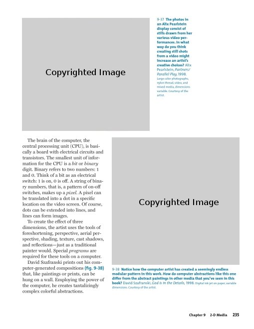
Page 235 from The Visual Experience (0-87192-627-X) by Davis Publications
Sample Code:
(Show/Hide)
<pagenum id="IDAGPLN">235</pagenum>
<imggroup>
<img src="images/U12C01/p235-001.png" alt="Alix Pearlstein,
Partners/ Parallel Play" width="306" height="272" />
<caption>9-37 <strong>The photos in an Alix Pearlstein
display consist of stills drawn from her various video performances.
In what way do you think creating still shots from a video might
increase an artist's creative choices? </strong>Alix Pearlstein,
<em>Partners/ Parallel Play,</em> 1998. Large color photographs,
nylon thread, video, and mixed media, dimensions variable. Courtesy
of the artist.</caption>
</imggroup>
<p>The brain of the computer, the central processing unit
(<acronym pronounce="no">CPU</acronym>), is basically a board
with electrical circuits and transistors. The smallest unit of
information for the <acronym pronounce="no">CPU</acronym>
is a <em>bit</em> or <em>binary</em> digit. Binary refers to two
numbers: 1 and 0. Think of a bit as an electrical switch: 1 is on,
0 is off. A string of binary numbers, that is, a pattern of on-off
switches, makes up a <em>pixel.</em> A pixel can be translated into a
dot in a specific location on the video screen. Of course, dots can
be extended into lines, and lines can form images.</p>
<p>To create the effect of three dimensions, the artist uses the tools
of foreshortening, perspective, aerial perspective, shading, texture,
cast shadows, and reflections--just as a traditional painter would.
Special <em>programs</em> are required for these tools on a computer.</p>
<p>David Szafranski prints out his computer-generated compositions
<strong>(fig. 9-38)</strong> that, like paintings or prints, can be hung
on a wall. Employing the power of the computer, he creates tantalizingly
complex colorful abstractions.</p>
<imggroup>
<img src="images/U12C01/p235-002.png" alt="David Szafranski,
God Is in the Details" width="309" height="309"/>
<caption>9-38 <strong>Notice how the computer artist has created a seemingly
endless modular pattern in this work. How do computer abstractions
like this one differ from the abstract paintings in other media that
you've seen in this book?</strong> David Szafranski, <em>God Is in
the Details,</em> 1998. Digital ink jet on paper, variable dimensions.
Courtesy of the artist.</caption>
</imggroup>
Information Object: bdo
Definition
Use: bdo is used in special cases where the automatic actions of the bi-directional display algorithm would result in incorrect display. "xml:lang" indicates the language of the content. "dir" indicates the writing direction: 'ltr' is left-to-right, 'rtl' is right-to-left.
Markup
"lang" indicates the language of the content. "dir" indicates the writing direction: 'ltr' is left-to-right, 'rtl' is right-to-left.
Syntax
<bdo class="..." xml:lang="...">...</bdo>
Examples
Example 1
<p>The name Rachel in Hebrew is written and read right to left as
follows: <bdo class="rtl" xml:lang="he">------</bdo>.</p>
Information Object: Computer Code
Definition
Computer code in a computer programming language.
Markup
Computer code, which is usually displayed in the printed book in Courier bold print, is marked with <code> tags. These tags can be used in inline settings.
Syntax
<code>...</code>
Examples
Example 1
<p>For example, <code>printf("--hello, world-- \n");</code> would
display "--hello, world--" on the screen, followed by a carriage return.</p>
See also Information Object: Keyboard Input and Information Object: Sample
Playback devices can be configured so that text tagged as <code> will preserve all white space (line breaks, indentation, etc.).
Information Object: Defining Instance
Definition
The first occurrence of a word or term that is defined or explained elsewhere in the book.
Markup
Use this element to mark the first occurrence of a word or term that is defined there or later in the book. If the definition appears later, include in the tag a link to the definition, located perhaps in a glossary.
Syntax
DTD Reference
<dfn>...</dfn>
Examples
Example 1
<p>Some of the most versatile materials are made of <dfn><a
href="#polymer">polymers.</a></dfn></p>
Illustrated Example 1
Page Sample:
(Show/Hide)
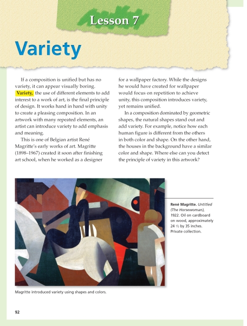
Page 92 from Art (0-329-08038-1) by Pearson Scott Foresman
Sample Code:
(Show/Hide)
<level2>
<pagenum id="IDAWMYQ">92</pagenum>
<h2>Lesson 7 Variety</h2>
<p>If a composition is unified but has no variety, it can appear visually
boring. <dfn>Variety</dfn>, the use of different elements to add
interest to a work of art, is the final principle of design.
It works hand in hand with unity to create a pleasing composition.
In an artwork with many repeated elements, an artist can introduce
variety to add emphasis and meaning.</p>
<p>This is one of Belgian artist René Magritte's early works
of art. Magritte (1898-1967) created it soon after finishing art
school, when he worked as a designer for a wallpaper factory. While
the designs he would have created for wallpaper would focus on
repetition to achieve unity, this composition introduces variety,
yet remains unified.</p>
<p>In a composition dominated by geometric shapes, the natural shapes
stand out and add variety. For example, notice how each human figure
is different from the others in both color and shape. On the other
hand, the houses in the background have a similar color and shape.
Where else can you detect the principle of variety in this artwork?</p>
<imggroup>
<img src="images/U11C10/p092-001.png" alt="René Magritte. Untitled
(The Horsewoman), 1922." width="477" height="342"/>
<caption><strong>René Magritte.</strong><em>Untitled (The
Horsewoman)</em>, 1922. Oil on cardboard on wood, approximately
24 1/2 by 35 inches. Private collection.</caption>
<caption>Magritte introduced variety using shapes and colors.</caption>
</imggroup>
<!-- ... -->
</level2>
Illustrated Example 2
Page Sample:
(Show/Hide)
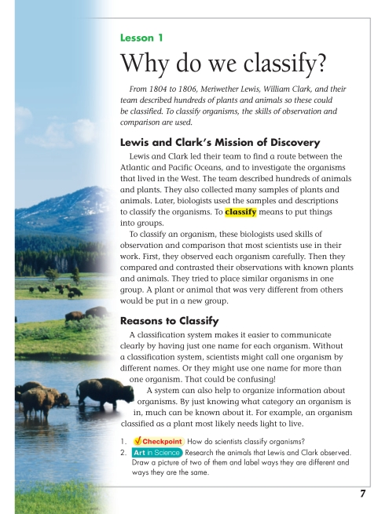
Page 7 from Science (0-328-34506-2) by Pearson Scott Foresman
Sample Code:
(Show/Hide)
<level3>
<pagenum id="IDAWUON">7</pagenum>
<h3>Lesson 1 Why do we classify?</h3>
<p><em>From 1804 to 1806, Meriwether Lewis, William Clark, and
their team described hundreds of plants and animals so these
could be classified. To classify organisms, the skills of
observation and comparison are used.</em></p>
<level4>
<h4>Lewis and Clark's Mission of Discovery</h4>
<p>Lewis and Clark led their team to find a route between the
Atlantic and Pacific Oceans, and to investigate the
organisms that lived in the West. The team described
hundreds of animals and plants. They also collected many
samples of plants and animals. Later, biologists used the
samples and descriptions to classify the organisms. To
<dfn>classify</dfn> means to put things into groups.</p>
<p>To classify an organism, these biologists used skills of
observation and comparison that most scientists use in
their work. First, they observed each organism carefully.
Then they compared and contrasted their observations with
known plants and animals. They tried to place similar
organisms in one group. A plant or animal that was very
different from others would be put in a new group.</p>
</level4>
<level4>
<h4>Reasons to Classify</h4>
<p>A classification system makes it easier to communicate
clearly by having just one name for each organism. Without
a classification system, scientists might call one organism
by different names. Or they might use one name for more
than one organism. That could be confusing!</p>
<p>A system can also help to organize information about
organisms. By just knowing what category an organism is
in, much can be known about it. For example, an organism
classified as a plant most likely needs light to live.</p>
<list type="pl">
<li>1. <strong>Checkpoint</strong> How do scientists
classify organisms?</li>
<li>2. <strong>Art in Science</strong> Research the
animals that Lewis and Clark observed. Draw a picture
of two of them and label ways they are different and
ways they are the same.</li>
</list>
</level4>
</level3>
Information Object: Emphasis
Definition
A word or series of words that the author has emphasized through the use of some typographical convention such as italic or boldface type or underlining.
Markup
The <em> and <strong> tags are relative indicators of emphasis. The <em> tag indicates moderate emphasis and the <strong> tag heavier emphasis. These tags must be used with care since their application will depend upon the types of emphasis employed in a document. In a book in which italics and boldface are used for emphasis, <em> would mark the former, and <strong> the latter. However, if a book used boldface in some situations and underlined boldface in other, <em> would mark the first type of emphasis and <strong> the second.
Syntax
<strong>...</strong> or <em>...</em>
Examples
Example 1
The following paragraph would be marked up as shown below:
"When pressing the blue button, hold down for two full seconds. And remember, DO NOT PRESS THE RED BUTTON!"
<p>When pressing the blue button, <em>hold down for two full
seconds.</em> And remember, <strong>DO NOT PRESS THE RED
BUTTON!</strong></p>
Illustrated Example 1
Page Sample:
(Show/Hide)
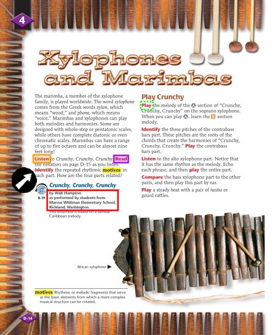
Page D-14 from Making Music (0-382-36571-2) by Pearson Scott Foresman
Sample Code:
(Show/Hide)
<level2>
<pagenum id="IDALIBR" page="special">D-14</pagenum>
<h2>4 Xylophones and Marimbas</h2>
<p>The marimba, a member of the xylophone family, is played worldwide.
The word <em>xylophone</em> comes from the Greek words <dfn>xylon</dfn>,
which means "wood," and <dfn>phone</dfn>, which means "voice."
Marimbas and xylophones can play both melodies and harmonies. Some
are designed with whole-step or pentatonic scales, while others have
complete diatonic or even chromatic scales. Marimbas can have a
range of up to five octaves and can be almost nine feet long!</p>
<p><strong>Listen</strong> to <em>Crunchy, Crunchy, Crunchy</em>.
<strong>Read</strong> the notation on page D-15 as you listen.
<strong>Identify</strong> the repeated rhythmic <em>motives</em>
in each part. How are the four parts related?</p>
<sidebar render="optional">
<img src="images/thruout/cdhp.png" alt="CD Icon" width="38" height="30"/>
<hd> 8-19 - Crunchy, Crunchy, Crunchy</hd>
<p>
<strong>by Walt Hampton as performed by students from Marcus
Whitman Elementary School, Richland, Washington</strong>
</p>
<p>This ensemble is based on a familiar Caribbean melody.</p>
</sidebar>
<level3>
<h3>Play Crunchy</h3>
<p><strong>Play</strong> the melody of the <strong>A</strong> section
of "Crunchy, Crunchy, Crunchy" on the soprano xylophone. When you
can play <strong>A,</strong> learn the <em>B</em> section melody.</p>
<p><strong>Identify</strong> the three pitches of the contrabass bars
part. These pitches are the roots of the chords that create the
harmonies of "Crunchy, Crunchy, Crunchy." <strong>Play</strong> the
contrabass bars part.</p>
<p><strong>Listen</strong> to the alto xylophone part. Notice that it
has the same rhythm as the melody. Echo each phrase, and then
<strong>play</strong> the entire part.</p>
<p><strong>Compare</strong> the bass xylophone part to the other parts,
and then play this part by ear.</p>
<p><strong>Play</strong> a steady beat with a pair of <em>hosho</em> or
gourd rattles.</p>
<imggroup>
<caption>African xylophone</caption>
<img src="images/U07C04/pD14-001.png" alt="african xylophone image"
width="528" height="310"/>
</imggroup>
<sidebar render="optional">
<dfn>motives</dfn> Rhythmic or melodic fragments that serve as
the basic elements from which a more complex musical structure can
be created.
</sidebar>
<!-- ... -->
</level3>
</level2>
Illustrated Example 2
Page Sample:
(Show/Hide)
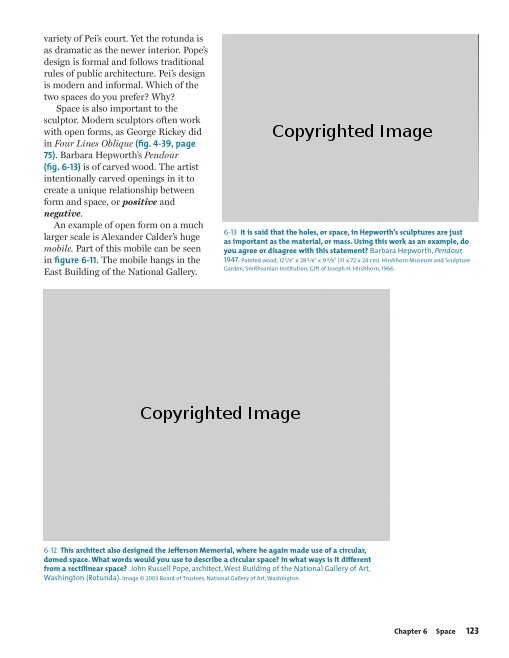
Page 123 from The Visual Experience (0-87192-627-X) by Davis Publications
Sample Code:
(Show/Hide)
<pagenum id="IDA2UKN">123</pagenum>
<p>variety of Pei's court. Yet the rotunda is as dramatic as the newer
interior. Pope's design is formal and follows traditional rules of
public architecture. Pei's design is modern and informal. Which of
the two spaces do you prefer? Why? </p>
<p>Space is also important to the sculptor. Modern sculptors often work
with open forms, as George Rickey did in <em>Four Lines Oblique</em>
<strong>(fig. 4-39, page 75)</strong>. Barbara Hepworth's
<em>Pendour</em> <strong>(fig. 6-13)</strong> is of carved wood.
The artist intentionally carved openings in it to create a unique
relationship between form and space, or <strong>positive</strong>
and <strong>negative.</strong></p>
<p>An example of open form on a much larger scale is Alexander Calder's
huge <em>mobile.</em> Part of this mobile can be seen in <strong>figure
6-11</strong>. The mobile hangs in the East Building of the National
Gallery.</p>
<imggroup>
<img src="images/p123-001.png" alt="Barbara Hepworth, Pendour"
width="306" height="225"/>
<caption>6-13 <strong>It is said that the holes, or space, in
Hepworth's sculptures are just as important as the material,
or mass. Using this work as an example, do you agree or
disagree with this statement?</strong> Barbara Hepworth,
<em>Pendour,</em> 1947. Painted wood, 12 1/8" x 28 3/8" x 9 3/8"
(31 x 72 x 24 cm). Hirshhorn Museum and Sculpture Garden,
Smithsonian Institution, Gift of Joseph H. Hirshhorn, 1966.</caption>
</imggroup>
<imggroup>
<img src="images/p123-002.png" alt="John Russell Pope, architect,
West Building of the National Gallery of Art, Washington (Rotunda)"
width="414" height="300"/>
<caption>6-12 <strong>This architect also designed the Jefferson
Memorial, where he again made use of a circular, domed space.
What words would you use to describe a circular space?
In what ways is it different from a rectilinear space?</strong>
John Russell Pope, architect, West Building of the National Gallery
of Art, Washington (Rotunda). Image © 2003 Board of Trustees, National
Gallery of Art, Washington.</caption>
</imggroup>
Illustrated Example 3
Page Sample:
(Show/Hide)
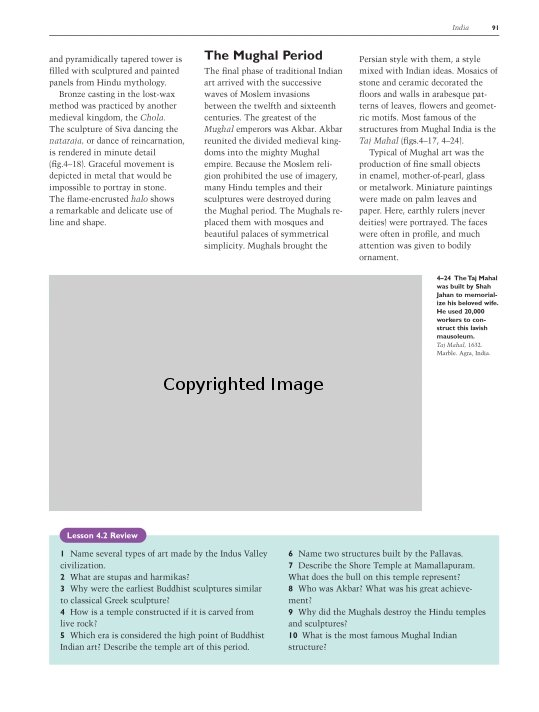
Page 91 from Discovering Art History (0-87192-719-5) by Davis Publications
Sample Code:
(Show/Hide)
<level3>
<!-- ... -->
<pagenum id="IDAD4KN">91</pagenum>
<p>and pyramidically tapered tower is filled with sculptured
and painted panels from Hindu mythology. </p>
<p>Bronze casting in the lost-wax method was practiced by another
medieval kingdom, the <em>Chola</em>. The sculpture of
Siva dancing the <em>nataraja</em>, or dance of reincarnation,
is rendered in minute detail (fig.4-18). Graceful movement is
depicted in metal that would be impossible to portray in
stone. The flame-encrusted <em>halo</em> shows a remarkable
and delicate use of line and shape.</p>
</level3>
<level3>
<h3>The Mughal Period</h3>
<p>The final phase of traditional Indian art arrived with the
successive waves of Moslem invasions between the twelfth and
sixteenth centuries. The greatest of the <em>Mughal</em>
emperors was Akbar. Akbar reunited the divided medieval
kingdoms into the mighty Mughal empire. Because the Moslem
religion prohibited the use of imagery, many Hindu temples
and their sculptures were destroyed during the Mughal period.
The Mughals replaced them with mosques and beautiful palaces
of symmetrical simplicity. Mughals brought the Persian style
with them, a style mixed with Indian ideas. Mosaics of stone
and ceramic decorated the floors and walls in arabesque
patterns of leaves, flowers and geometric motifs. Most famous
of the structures from Mughal India is the <em>Taj Mahal</em>
(figs.4-17, 4-24).</p>
<p>Typical of Mughal art was the production of fine small objects
in enamel, mother-of-pearl, glass or metalwork. Miniature
paintings were made on palm leaves and paper. Here, earthly
rulers (never deities) were portrayed. The faces were often in
profile, and much attention was given to bodily ornament.</p>
<imggroup>
<img src="images/U09C03/p091-001.png" alt="Taj Mahal"
width="443" height="281"/>
<caption><strong>4-24 The Taj Mahal was built by Shah
Jahan to memorialize his beloved wife. He used 20,000
workers to construct this lavish mausoleum.</strong>
</caption>
<caption><em>Taj Mahal</em>, 1632. Marble. Agra,
India.</caption>
</imggroup>
</level3>
<level3>
<h3>Lesson 4.2 Review </h3>
<list type="pl">
<li>1 Name several types of art made by the Indus Valley
civilization. </li>
<li>2 What are stupas and harmikas? </li>
<li>3 Why were the earliest Buddhist sculptures similar to
classical Greek sculpture? </li>
<li>4 How is a temple constructed if it is carved from live
rock? </li>
<li>5 Which era is considered the high point of Buddhist
Indian art? Describe the temple art of this period. </li>
<li>6 Name two structures built by the Pallavas. </li>
<li>7 Describe the Shore Temple at Mamallapuram. What does
the bull on this temple represent? </li>
<li>8 Who was Akbar? What was his great achievement? </li>
<li>9 Why did the Mughals destroy the Hindu temples and
sculptures? </li>
<li>10 What is the most famous Mughal Indian structure?</li>
</list>
</level3>
Illustrated Example 4
Page Sample:
(Show/Hide)
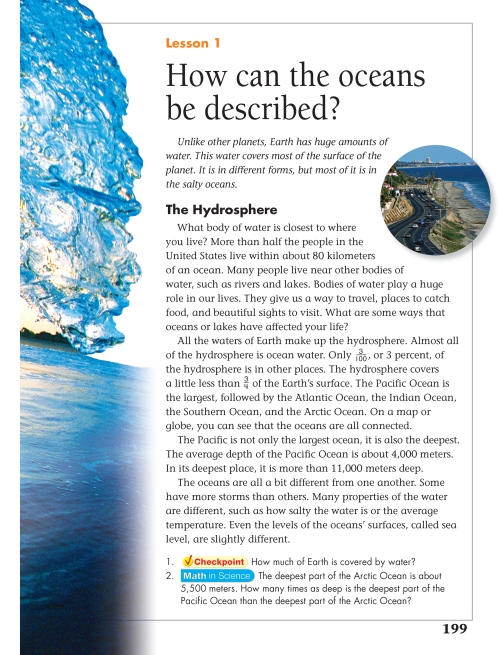
Page 199 from Science (0-328-34506-2) by Pearson Scott Foresman
Sample Code:
(Show/Hide)
<level3>
<pagenum id="IDAKUKN">199</pagenum>
<h3>Lesson 1 How can the oceans be described?</h3>
<p><em>Unlike other planets, Earth has huge amounts of water. This
water covers most of the surface of the planet. It is in
different forms, but most of it is in the salty oceans.</em>
</p>
<img src="images/U14C03/p199-001.png" alt="beaches" width="155"
height="159"/>
<level4>
<h4>The Hydrosphere</h4>
<p>What body of water is closest to where you live? More than
half the people in the United States live within about 80
kilometers of an ocean. Many people live near other bodies
of water, such as rivers and lakes. Bodies of water play a
huge role in our lives. They give us a way to travel,
places to catch food, and beautiful sights to visit. What
are some ways that oceans or lakes have affected your
life?</p>
<p>All the waters of Earth make up the hydrosphere. Almost
all of the hydrosphere is ocean water. Only 3/100, or 3
percent, of the hydrosphere is in other places. The
hydrosphere covers a little less than 3/4 of the Earth's
surface.</p>
<p>The Pacific Ocean is the largest, followed by the Atlantic
Ocean, the Indian Ocean, the Southern Ocean, and the
Arctic Ocean. On a map or globe, you can see that the
oceans are all connected. The Pacific is not only the
largest ocean, it is also the deepest. The average depth
of the Pacific Ocean is about 4,000 meters. In its deepest
place, it is more than 11,000 meters deep.</p>
<p>The oceans are all a bit different from one another. Some
have more storms than others. Many properties of the
water are different, such as how salty the water is or
the average temperature. Even the levels of the oceans'
surfaces, called sea level, are slightly different. </p>
<list type="pl">
<li>1. <strong>Checkpoint</strong> How much of Earth is
covered by water?</li>
<li>2. <strong>Math in Science</strong> The deepest part
of the Arctic Ocean is about 5,500 meters. How many
times as deep is the deepest part of the Pacific Ocean
than the deepest part of the Arctic Ocean?</li>
</list>
</level4>
</level3>
Information Object: Horizontal Rule
New in the 2005 release of the DAISY Standard: The <hr /> element has been removed from the DTD and the content model.
Information Object: Keyboard Input
Definition
Information that the reader of the book is to input directly into a computer using the keyboard.
Markup
Content that is to be entered into a computer via a keyboard is to be marked with the <kbd> tag. This tag can be used in either block or inline settings.
Syntax
<kbd>...</kbd>
Examples
Example 1
<p>To copy the selection to the clipboard, press <kbd>CTRL+C</kbd>.</p>
See also Information Object: Computer Code and Information Object: Sample
Information Object: Line Break
Definition
A line break constitutes the forcible division of text onto separate lines. Text is sometimes presented with no punctuation separating different segments but with each segment appearing on a line by itself. When it is necessary to preserve these separations a line break should be forced.
Markup
This is an empty element (i.e., only a single tag ending in "/" is used, rather than the usual start and end tags).
Syntax
<br />
Examples
Example 1
<code>while( i < limit ) <br/>
i++;<br />
</code>
Illustrated Example 1
Page Sample:
(Show/Hide)
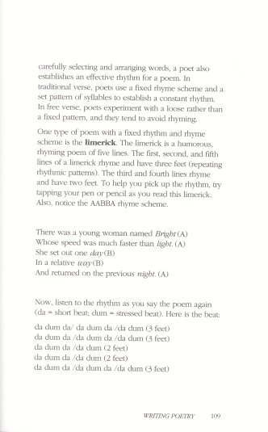
Page 109 from Creative Writing Handbook (0-673-36013-X) by Good Year Books
Sample Code:
(Show/Hide)
<pagenum id="id89235223">109</pagenum>
<p>carefully selecting and arranging words, a poet also establishes
an effective rhythm for a poem. In traditional verse, poets use a
fixed rhyme scheme and a set pattern of syllables to establish a
constant rhythm. In free verse, poets experiment with a loose
rather than a fixed pattern, and they tend to avoid rhyming.</p>
<p>One type of poem with a fixed rhythm and rhyme scheme is the
<dfn>limerick</dfn>. The limerick is a humorous, rhyming
poem of five lines. The first, second and fifth lines of a
limerick rhyme and have three feet (repeating rhythmic patterns).
The third and fourth lines rhyme and have two feet. To help you
pick up the rhythm, try tapping your pen or pencil as you read
this limerick. Also, notice the AABBAA rhyme scheme.</p>
<linegroup>
<line>There was a young woman named Bright (A)</line>
<line>Whose speed was much faster than light. (A)</line>
<line>She set out one day (B)</line>
<line>In a relative way (B)</line>
<line>And returned on the previous night (A)</line>
</linegroup>
<p>Now, listen to the rhythm as you say the poem again (da = short
beat; dum = stressed beat). Here is the beat: </p>
<p>da dum da/ da dum da /da dum (3 feet)<br/>
da dum da /da dum da /da dum (3 feet)<br/>
da dum da /da dum (2 feet)<br/>
da dum da /da dum (2 feet)<br/>
da dum da /da dum da /da dum (3 feet)</p>
Illustrated Example 2
Page Sample:
(Show/Hide)
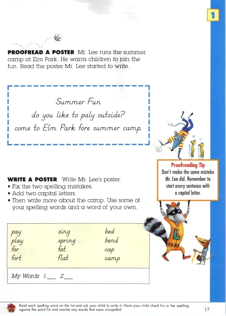
Page 17 from Everyday Spelling (0-328-22299-2) by Pearson Scott Foresman
Sample Code:
(Show/Hide)
<level3>
<pagenum id="IDAA3QQ">17 </pagenum>
<h3>Proofread a Poster</h3>
<p>Mr. Lee runs the summer camp at Elm Park. He wants children to
join the fun. Read the poster Mr. Lee started to write.</p>
<p>Summer Fun<br />
do you like to paly outside?<br />
come to Elm Park fore summer camp.</p>
<sidebar render="optional">
<hd>Proofreading Tip</hd>
<p>Don't make the same mistake Mr. Lee did. Remember to start
every sentence with a capital letter.</p>
</sidebar>
</level3>
<level3>
<h3>Write A Poster</h3>
<p>Write Mr. Lee's poster. </p>
<list type="ul">
<li>Fix the two spelling mistakes.</li>
<li>Add two capital letters.</li>
<li>Then write more about the camp. Use some of your spelling
words and a word of your own.</li>
</list>
<list type="pl">
<li>pay</li>
<li>play</li>
<li>for</li>
<li>fort</li>
<li>sing</li>
<li>spring</li>
<li>fat</li>
<li>flat</li>
<li>bed</li>
<li>bend</li>
<li>cap</li>
<li>camp</li>
</list>
<p><em>My Words</em></p>
<list type="pl">
<li><em>1 </em> .____</li>
<li><em>2. </em>____</li>
</list>
<sidebar render="optional">
<img src="images/thruout/house.png" alt="House Icon"
width="34" height="30"/>
<p>Read each spelling word on the list and ask your child to
write it. Have your child check his or her spelling
against the word list and rewrite any words that were
misspelled.</p>
</sidebar>
<!-- ... -->
</level3>
Information Object: Line Number
Definition
A number preceding a line of text in a document such as a poem or legal text.
Markup
This element, <linenum> can only be used within <line>.
Syntax
<linenum>... </linenum>
Examples
Example 1
<p><line><linenum>1</linenum> There was a little girl</line>
<line><linenum>2</linenum> Who had a little curl</line>
</p>
Illustrated Example 1
Page Sample:
(Show/Hide)

Page 152 from Twentieth-Century American Poetry (0-07-142779-1) by McGraw-Hill
Sample Code:
(Show/Hide)
<poem>
<linegroup>
<!-- ... -->
<pagenum id="IDALAKP">152</pagenum>
<line><linenum>13</linenum> a tiny purple blemish. Each part
</line>
<line><linenum>14</linenum> is a blossom under his touch
</line>
<line><linenum>15</linenum> to which the fibres of her being
</line>
<line><linenum>16</linenum> stem one by one, each to its end,
</line>
<line><linenum>17</linenum> until the whole field is a</line>
<line><linenum>18</linenum> white desire, empty, a single
stem,</line>
<line><linenum>19</linenum> a cluster, flower by flower,
</line>
<line><linenum>20</linenum> a pious wish to whiteness gone
over—</line>
<line><linenum>21</linenum> or nothing</line>
</linegroup>
<dateline>1921</dateline>
</poem>
<poem>
<hd>To Waken an Old Lady</hd>
<linegroup>
<line><linenum>1</linenum> Old age is</line>
<line><linenum>2</linenum> a flight of small</line>
<line><linenum>3</linenum> cheeping birds</line>
<line><linenum>4</linenum> skimming</line>
<line><linenum>5</linenum> bare trees</line>
<line><linenum>6</linenum> above a snow glaze.</line>
<line><linenum>7</linenum> Gaining and failing</line>
<line><linenum>8</linenum> they are buffeted</line>
<line><linenum>9</linenum> by a dark wind—</line>
<line><linenum>10</linenum> But what?</line>
<line><linenum>11</linenum> On harsh weedstalks</line>
<line><linenum>12</linenum> the flock has rested,</line>
<line><linenum>13</linenum> the snow</line>
<line><linenum>14</linenum> is covered with broken</line>
<line><linenum>15</linenum> seedhusks</line>
<line><linenum>16</linenum> and the wind tempered</line>
<line><linenum>17</linenum> by a shrill</line>
<line><linenum>18</linenum> piping of plenty.</line>
</linegroup>
<dateline>1921</dateline>
</poem>
<poem>
<hd>The Widow's Lament in Springtime</hd>
<linegroup>
<line><linenum>1</linenum> Sorrow is my own yard</line>
<line><linenum>2</linenum> where the new grass</line>
<line><linenum>3</linenum> flames as it has flamed</line>
<line><linenum>4</linenum> often before but not</line>
<line><linenum>5</linenum> with the cold fire</line>
<line><linenum>6</linenum> that closes round me this year.
</line>
<line><linenum>7</linenum> Thirtyfive years</line>
<line><linenum>8</linenum> I lived with my husband.</line>
<line><linenum>9</linenum> The plumtree is white today</line>
<line><linenum>10</linenum> with masses of flowers.</line>
<line><linenum>11</linenum> Masses of flowers</line>
<!-- ... -->
</linegroup>
</poem>
Information Object: Page Number
Definition
A number printed on a page of a document to uniquely identify it. Most contemporary books are paginated consecutively and pages are generally accounted for in the pagination sequence even if a number is not actually printed on the page.
Bibliographic Reference
Markup
The intent of using markup to indicate page numbers is to provide direct navigation to a page. It is strongly recommended that pages be individually and uniquely tagged in text books, and recommended that wherever possible, they be included in all DTBs. All page tags must have a unique id attribute.
Page numbers are marked with the <pagenum> tag. There are three types of pages which are distinguished in the markup through use of the "page" attribute. page="normal" is used to indicate that the content of the number is the standard arabic numeral used in the body and rear matter of most books. page="front" is used to mark the page numbers used in the front matter of most books (most often roman numerals but sometimes arabic). Regardless of the type of page numbering used in the book, pages located in the front matter, preceding the body, should be marked up as page="front". page="special" is used to indicate variant pagination schemes used in some books, for example hyphenated numbers often used in appendices (A-1, A-2, etc.). page="special" is also used to mark up pages without page numbers, for example, pages with photos which occur between sequentially numbered pages.
Pages that are unnumbered but are a part of the page number sequence, should be marked with the correct page number in the sequence with the appropriate attribute, page="normal", page="front", or page="special".
The pagenum element is not a required element. Electronic documents are often produced without page numbers. Such documents, electronic or print, should be produced without page numbers, exactly as they have been published.
The <pagenum> tag must be placed at the top of a page, regardless of where the page number is located on the print page, so that the end user will be positioned at the beginning of the page when he or she navigates to it. To ensure accurate navigation, the markup at the beginning of a major structure (part, chapter, section, etc.) must follow a precise order. The order should always be: level1-6 tag, pagenum, heading. This will ensure that if end users navigate to the beginning of the major structure (as marked by the level1-6 tag) and begin playback, they will hear both the page number and the heading of the major structure. If they navigate to the page number, they will still hear both page number and heading.
When pages are being included in a DTB, all pages, including blank ones, must be marked. In a DTB with audio, the end user should receive aural confirmation of the existence of blank pages, e.g., "Page 43, blank page." Pages that are part of the pagination sequence but have no page number printed on them should be tagged and the page number included. Unnumbered pages (those that are not included in the pagination sequence) should be tagged but no page number should be included within the tag, allowing navigation by "next" and "previous" page controls.
Syntax
<pagenum page="normal" id="...">...</pagenum>
<pagenum page="front" id="...">...</pagenum>
<pagenum page="special" id="...">...</pagenum>
Examples
Example 1: page="front" and page="normal"
<frontmatter>
<doctitle>Not Your Conventional Cookbook</doctitle>
<level1 class="preface" id="pf">
<pagenum page="front" id="fm-3">iii</pagenum>
<h1 class="preface">Preface, Acknowledgments and a Note on Structure</h1>
<p>This is not a conventional cookbook. Though I should straightaway attach
a disclaimer to my disclaimer and say that I have nothing but the highest regard
for the traditional collection of recipes, arranged by ingredient under broad,
usually geographical categories.</p>
</level1>
</frontmatter>
<bodymatter>
<level1 class="chapter">
<pagenum page="normal" id="ch3-43">43</pagenum>
<h1>A Winter Menu</h1>
<p>Winston Churchill was fond of saying that the Chinese ideogram for crisis
is composed of the two characters which separately mean "danger" and
"opportunity".</p>
</level1>
</bodymatter>
Example 2: page="special"
<bodymatter>
<level1 class="chapter">
<pagenum id="pt3-ch4-app1-1" page="special">W-1</pagenum>
<h1>Welcome to ClarisImpact</h1>
<p>ClarisImpact is a smart, integrated business graphics program that allows
you to create, edit, and communicate attractive, professional-looking business
graphics quickly and easily.</p>
<!-- ... -->
<level2 class="section">
<pagenum id="pt3-ch4-app1-2" page="special">W-2</pagenum>
<h2>Onscreen Help</h2>
<p>ClarisImpact Help provides onscreen, step-by-step instructions and
reference information as you work in ClarisImpact. You can easily search for
topics and move from one topic to another. </p>
<!-- ... -->
</level2>
<!-- ... -->
</level1>
</bodymatter>
Example 3: page="normal" -- blank page
<bodymatter>
<level1 class="chapter">
<pagenum id="pt3-ch5" page="normal">104</pagenum>
<prodnote render="optional">blank page</prodnote>
</level1>
</bodymatter>
Illustrated Example 1
Page Sample:
(Show/Hide)
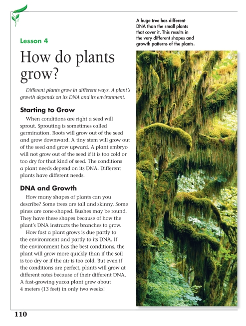
Page 110 from Science (0-328-34506-2) by Pearson Scott Foresman
Sample Code:
(Show/Hide)
<level3>
<pagenum id="IDA3UVN">110</pagenum>
<h3>Lesson 4 How Do Plants Grow?</h3>
<p><em>Different plants grow in different ways. A plant's growth depends
on its DNA and its environment.</em></p>
<level4>
<h4>DNA and Growth</h4>
<p>When conditions are right a seed will sprout. Sprouting is sometimes
called germination. Roots will grow out of the seed and grow downward.
A tiny stem will grow out of the seed and grow upward. A plant embryo
will not grow out of the seed if it is too cold or too dry for that
kind of seed. The conditions a plant needs depend on its DNA.
Different plants have different needs.</p>
<p>How many different shapes of plants can you describe? Some trees
are tall and skinny. Some pines are cone-shaped. Bushes are often
round like a ball. These shapes are the result of how the plant's
DNA instructs the branches to grow.</p>
<p>How fast a plant grows is due partly to the environment and partly
to its DNA. If the environment has the best conditions, the plant
will grow more quickly than if the soil is too dry or if the air is
too cold. But even if the conditions are perfect, plants will grow
at different rates because of their different DNA. One of the
fastest-growing plants was a yucca plant that grew about 4 meters
(13 feet) in only two weeks!</p>
<imggroup>
<caption>A huge tree has different DNA than the small plants
that cover it. This results in the very different shapes and growth
patterns of the plants.</caption>
<img src="images/U13C06/p110-001.png" alt="tree" width="247" height="617"/>
</imggroup>
<!-- ... -->
</level4>
</level3>
Illustrated Example 2
Page Sample:
(Show/Hide)
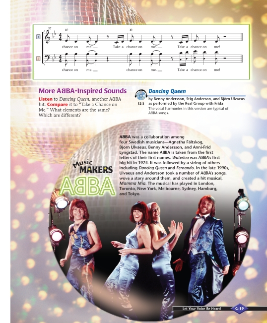
Page G-19 from Making Music (0-382-36576-3) by Pearson Scott Foresman
Sample Code:
(Show/Hide)
<level3>
<pagenum id="IDAPGUQ" page="special">G-19</pagenum>
<h3>More ABBA-Inspired Sounds</h3>
<p><strong>Listen </strong>to <em>Dancing Queen,</em> another ABBA hit.
<strong>Compare</strong> it to "Take a Chance on Me." What elements
are the same? Which are different?</p>
<sidebar render="optional">
<img src="images/thruout/cdhp.png" alt="CD Icon" width="38" height="30"/>
<hd> 12-3 <cite>Dancing Queen</cite></hd>
<p><strong>by Benny Andersson, Stig Anderson, and Björn Ulvaeus as performed
by the Real Group with Frida</strong></p>
<p>The vocal harmonies in this version are typical of ABBA songs.</p>
</sidebar>
<sidebar render="optional">
<hd>Music Makers ABBA</hd>
<p><strong>ABBA</strong> was a collaboration among four Swedish musicians--Agnetha
Faltskog, Björn Ulvaeus, Benny Andersson, and Anni-Frid Lyngstad.
The name ABBA is taken from the first letters of their first names.
<em>Waterloo</em> was ABBA's first big hit in 1974. It was followed
by a string of others including <em>Dancing Queen</em> and <em>Fernando</em>.
In the late 1990s, Ulvaeus and Andersson took a number of ABBA's
songs, wove a story around them, and created a hit musical, <em>Mamma
Mia</em>. The musical has played in London, Toronto, New York,
Melbourne, Sydney, Hamburg, and Tokyo.</p>
<img src="images/U10C06/pG19-001.png" alt="A photo of the members of ABBA"
width="504" height="480"/>
</sidebar>
</level3>
Illustrated Example 3
Page Sample:
(Show/Hide)
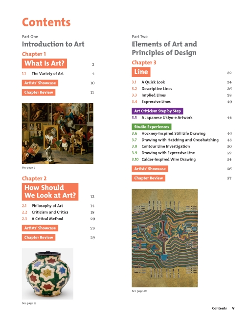
Page v from The Visual Experience (0-87192-627-X) by Davis Publications
Sample Code:
(Show/Hide)
<level1>
<pagenum id="IDA0QKN" page="front">v</pagenum>
<h1>Contents</h1>
<list type="pl">
<li><strong>Part One - Introduction to Art</strong>
<list type="pl">
<li><strong>Chapter 1 - What Is Art?</strong> 2
<list type="pl">
<li>1.1 The Variety of Art 4</li>
<li><strong>Artists' Showcase</strong> 10 </li>
<li><strong>Chapter Review </strong>11 </li>
<li>
<imggroup>
<img src="images/U04C00/pr05-001.png"
height="150" width="175" alt="Pierre Subleyras,
The Artists's studio"/>
<caption>See page 2</caption>
</imggroup>
</li>
</list>
</li>
<li><strong>Chapter 2 How Should We Look at Art? </strong>12
<list type="pl">
<li>2.1 Philosophy of Art 14 </li>
<li>2.2 Criticism and Critics 18</li>
<li>2.3 A Critical Method 20</li>
<li><strong>Artists' Showcase</strong> 28</li>
<li><strong>Chapter Review</strong> 29 </li>
<li>
<imggroup>
<img src="images/U04C00/pr05-002.png"
height="126" width="126"
alt="Ogata Kenzan, Water jar with
design of maple leaves"/>
<caption>See page 12</caption>
</imggroup>
</li>
</list>
</li>
</list>
</li>
<li><strong>Part Two Elements of Art and Principles of Design</strong>
<list type="pl">
<li><strong>Chapter 3 Line</strong> 32
<list type="pl">
<li>3.1 A Quick Look 34</li>
<li>3.2 Descriptive Lines 36</li>
<li>3.3 Implied Lines 38</li>
<li>3.4 Expressive Lines 40 </li>
<li><strong>Art Criticism Step by Step</strong>
<list type="pl">
<li>3.5 A Japanese Ukiyo-e Artwork 44</li>
</list>
</li>
<li><strong>Studio Experiences</strong>
<list type="pl">
<li>3.6 Hockney-Inspired Still Life Drawing 46</li>
<li>3.7 Drawing with Hatching and Crosshatching 48</li>
<li>3.8 Contour Line Investigation 50</li>
<li>3.9 Drawing with Expressive Line 52 </li>
<li>3.10 Calder-Inspired Wire Drawing 54</li>
</list>
</li>
<li><strong>Artists' Showcase</strong> 56 </li>
<li><strong>Chapter Review</strong> 57 </li>
<li>
<imggroup>
<img src="images/U04C00/pr05-003.png"
height="242" width="163"
alt="Norman Kelly Tjampitjinpa,
Flying Ant Dreaming"/>
<caption>See page 32</caption>
</imggroup>
</li>
</list>
</li>
</list>
</li>
</list>
</level1>
Information Object: Producer's Note
Definition
Language added to the DTB by the producing organization; commonly used to provide verbal descriptions of visual elements such as charts, graphs, etc., supply operating instructions, or describe differences between the print book and the DTB. Traditionally, this has been called a transcriber's note, reader's note, or editor's note.
Markup
Producer's notes are marked with the <prodnote> tag and must be identified as "required" or "optional" using the "render" attribute. Optional producer's notes may be turned on or off by the end user; that is, the playback device or browser includes settings that either automatically play all producer's notes as they are encountered or play only those marked as "required." The producer must decide for each <prodnote> whether it contains critical information and is thus marked as "required" or merely contains helpful information that an end user could skip without harm. If there's uncertainty whether to use the "optional" or "required" attribute, use "required".
The showin attribute can be used to control in which of three media types a given <prodnote> will be displayed. The allowable values for showin are xxx, xxp, xlx, xlp, bxx, bxp, blx, and blp, where x = inappropriate, b = braille, l = large print, and p = print. Thus the value "xlp" would prompt a player to display the prodnote in large print or print versions, but not in braille.
Note: See Information Object: Producer's Note in Part II(b): Block Elements for examples of <prodnote> used as a block element.
Syntax
<prodnote render="required">..</prodnote>
OR
<prodnote render="optional">..</prodnote>
New in the 2005 release of the DAISY Standard: The "render" attribute is required, and must have a value of either "optional" or "required."
Examples
Example 1
<p>The twenty-first century began in 1999. <prodnote
render="optional">This sentence has been read exactly as it appears in the
print book.</prodnote></p>
Illustrated Example 1
Page Sample:
(Show/Hide)

Page 426 from Making Music (0-328-36570-4) by Pearson Scott Foresman
Sample Code:
(Show/Hide)
<rearmatter>
<level1 class="glossary">
<pagenum id="IDAKEL">426</pagenum>
<h1>Glossary</h1>
<p>Highlighted terms appear as vocabulary words on the
indicated lesson pages. <prodnote render="optional">In
this digital text, all highlighted terms are identified with
a <span> of class "vocabulary".</prodnote></p>
<dl>
<dt>AB form</dt>
<dd>A musical plan that has two sections or parts.
p. 167</dd>
<dt>ABA form </dt>
<dd>A musical plan that has three sections or parts.
The first and last sections are the same. The
middle section is different. p. 201</dd>
<dt><span class="vocabulary">accent</span></dt>
<dd><img src="images/thruout/accmark.png" alt="Accent"
width="22" height="13"/> Gives extra importance
to a note in a rhythm pattern. p. 78</dd>
<dt><span class="vocabulary">accompaniment</span></dt>
<dd>Music that is performed to go with a melody. p.
142</dd>
<dt><span class="vocabulary">bar line</span></dt>
<dd><img src="images/U15C00/bline.png" alt="Bar line"
width="36" height="20"/> A vertical line drawn
through a staff to separate measures. p. 83</dd>
<dt><span class="vocabulary">borduns</span></dt>
<dd>Repeated patterns used to accompany music. They
have two pitches, one of which is the home tone.
p. 419</dd>
<dt><span class="vocabulary">call and response</span></dt>
<dd>A style of choral singing. First one person sings
the call and then the rest of the chorus sings a
response, or an answer. p. 19</dd>
<dt><span class="vocabulary">coda</span></dt>
<dd><img src="images/thruout/coda.png" width="14"
height="13" alt="Coda"/> A short section added to
the end of a song. p. 168</dd>
<dt><span class="vocabulary"><em>crescendo</em></span></dt>
<dd><img src="images/thruout/cres.png" alt="Crescendo"
width="35" height="16"/> A word or music symbol
that tells the performer to get gradually louder.
p. 116</dd>
<dt><span class="vocabulary">cumulative song</span></dt>
<dd>A song that gets longer as each new verse is
added. p. 360</dd>
<dt><span class="vocabulary"><em>D.C. al Fine</em></span>
</dt>
<dd>An Italian phrase that tells the performer to go
back to the beginning of the song and sing until
the word Fine. p. 200</dd>
<dt><span class="vocabulary">dynamics</span></dt>
<dd>A word that describes the loudness or softness of
music. p. 6</dd>
<dt><span class="vocabulary"><em>fermata</em></span></dt>
<dd><img src="images/thruout/formata.png" alt="Fermata"
width="27" height="17"/> A symbol that tells a
performer to hold a note for an extra long time.
p. 191</dd>
<dt><span class="vocabulary">form</span></dt>
<dd>The order of same and different ideas in music.
p. 52</dd>
<dt><em>forte</em></dt>
<dd><strong>f</strong> loud. p. 6</dd>
<dt><span class="vocabulary">improvise</span></dt>
<dd>To make up music as it is being performed. p.
219</dd>
<dt><span class="vocabulary">introduction</span></dt>
<dd>A short section placed at the beginning of a song.
p. 345</dd>
<dt><span class="vocabulary">ledger line</span></dt>
<dd><img src="images/U15C00/p426-001.png" alt="Ledger
line" width="15" height="19"/> An extra line used
for pitches above or below the staff. p. 101</dd>
<dt><span class="vocabulary"><em>legato</em></span></dt>
<dd>Describes a melody that has smooth, connected
pitches p. 152</dd>
<dt><span class="vocabulary">measure </span></dt>
<dd><img src="images/U15C00/p426-002.png" alt="Measure"
width="44" height="20"/> A grouping of beats
separated by bar lines. p. 83</dd>
<dt><span class="vocabulary">melody</span></dt>
<dd>A row of pitches that move up or down or repeat.
p. 24</dd>
<dt><span class="vocabulary">meter</span></dt>
<dd>The way beats of music are grouped together. They
are often in sets of two or sets of three. p.
196</dd>
<!-- ... -->
</dl>
</level1>
</rearmatter>
Illustrated Example 2
Page Sample:
(Show/Hide)
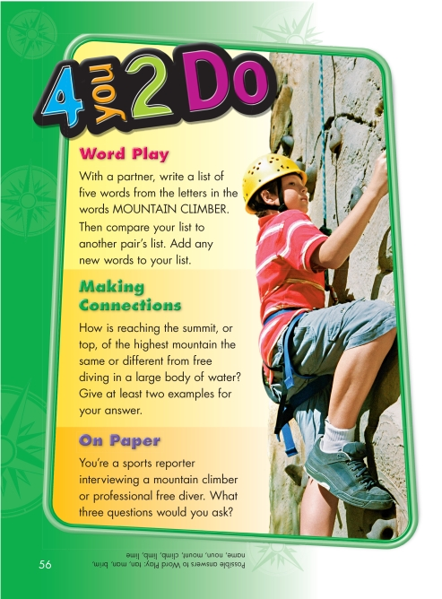
Page 56 from Sidewalks (0-328-21489-2) by Pearson Scott Foresman
Sample Code:
(Show/Hide)
<level2>
<pagenum id="IDAOKNO">56</pagenum>
<h2>4 you 2 Do</h2>
<level3>
<h3>Word Play</h3>
<p>With a partner, write a list of five words from the
letters in the words MOUNTAIN CLIMBER.</p>
<p>Then compare your list to another pair's list. Add any new
words to your list.</p>
</level3>
<level3>
<h3>Making Connections</h3>
<p>How is reaching the summit, or top, of the highest
mountain the same or different from free diving in a
large body of water? Give at least two examples for your
answer.</p>
</level3>
<level3>
<h3>On Paper</h3>
<p>You're a sports reporter interviewing a mountain climber
or professional free diver. What three questions would
you ask?</p>
<p><prodnote render="optional">The answers below are shown in
the original text upside down.</prodnote> Possible
answers to Word Play: tan, man, brim, name, noun, mount,
climb, limb, lime</p>
</level3>
<!-- ... -->
</level2>
Information Object: Quotation
Definition
A quotation is a written passage drawn verbatim from another work. An inline (or text level) quotation is integrated into the text. This process is used for short quotations which don't require paragraph breaks. For longer quotations set off from surrounding text by paragraph breaks, see Block Structures Information Object: Quotation .
Markup
Inline or text level quotations are marked with the <q> element. (When quotation marks are used only for emphasis, rather than to indicate an actual quotation, no markup is necessary.) The optional cite attribute can include a URI to the source of the quotation. An author may be indicated with <cite><author>...</author></cite>.
Syntax
DTD Reference
<q cite="...">
...
<cite><author>...</author></cite>
</q>
Examples
Example 1
<p>Sir Walter Scott said it best when he wrote, <q>"Oh, what a tangled
web we weave, When first we practice to deceive!" </q>.</p>
Illustrated Example 1
Page Sample:
(Show/Hide)
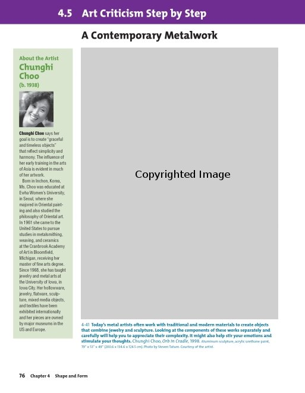
Page 76 from The Visual Experience (0-87192-627-X) by Davis Publications
Sample Code:
(Show/Hide)
<level3>
<pagenum id="IDA0ZMN">76</pagenum>
<h3>4.5 Art Criticism Step by Step </h3>
<level4>
<h4>A Contemporary Metalwork</h4>
<imggroup>
<img src="images/p076-002.png" alt="Chunghi Choo, Orb in Cradle"
width="397" height="546"/>
<caption>4-41<strong> Today's metal artists
often work with traditional and modern materials to create objects
that combine jewelry and sculpture. Looking at the components of
these works separately and carefully will help you to appreciate
their complexity. It might also help stir your emotions and stimulate
your thoughts.</strong> Chunghi Choo, <em>Orb in Cradle,</em> 1998.
Aluminum sculpture, acrylic urethane paint, 79" x 53" x 49" (200.6
x 134.6 x 124.5 cm). Photo by Steven Tatum. Courtesy of the artist.</caption>
</imggroup>
<sidebar render="optional">
<hd>About the Artist Chunghi Choo (b. 1938)</hd>
<p>
<img src="images/p076-001.png" alt="Chunghi Choo"
width="70" height="72"/>
<strong>Chunghi Choo</strong> says her
goal is to create <q>"graceful and timeless objects"</q>
that reflect simplicity and harmony. The influence of her
early training in the arts of Asia is evident in much of
her artwork. </p>
<p>Born in Inchon, Korea, Ms. Choo was educated at Ewha Women's University,
in Seoul, where she majored in Oriental painting and also studied
the philosophy of Oriental art. In 1961 she came to the United States
to pursue studies in metalsmithing, weaving, and ceramics at the
Cranbrook Academy of Art in Bloomfield, Michigan, receiving her
master of fine arts degree. Since 1968, she has taught jewelry and
metal arts at the University of Iowa, in Iowa City. Her hollowware,
jewelry, flatware, sculpture, mixed media objects, and textiles
have been exhibited internationally and her pieces are owned by
major museums in the US and Europe.</p>
</sidebar>
</level4>
</level3>
Illustrated Example 2
Page Sample:
(Show/Hide)
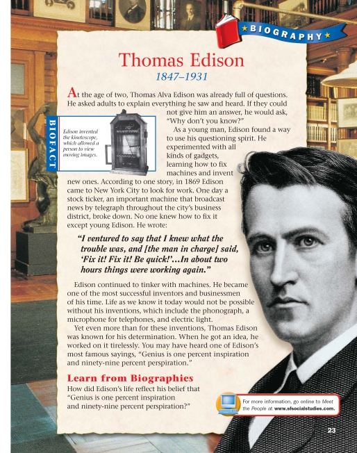
Page 23 from Social Studies (0-328-23975-5) by Pearson Scott Foresman
Sample Code:
(Show/Hide)
<pagenum id="IDA3VAO"> 23</pagenum>
<p><strong>Biography</strong></p>
<level2>
<h2>Thomas Edison</h2>
<p><strong>1847-1931</strong></p>
<p>At the age of two, Thomas Alva Edison was
already full of questions. He asked adults to explain everything
he saw and heard. If they could not give him an answer, he would
ask, <q>"Why don't you know?"</q></p>
<p>As a young man, Edison found a way to use his questioning spirit. He
experimented with all kinds of gadgets, learning how to fix machines
and invent new ones. According to one story, in 1869 Edison came to
New York City to look for work. One day a stock ticker, an important
machine that broadcast news by telegraph throughout the city's business
district, broke down. No one knew how to fix it except young Edison.
He wrote: </p>
<blockquote>
<p>"I ventured to say that I knew what the
trouble was, and [the man in charge] said, `Fix it! Fix it! Be
quick!'...In about two hours things were working again."</p>
</blockquote>
<p>Edison continued to tinker with machines. He became one of the most
successful inventors and businessmen of his time. Life as we know it
today would not be possible without his inventions, which include the
phonograph, a microphone for telephones, and electric light.</p>
<p>Yet even more than for these inventions, Thomas Edison was known for
his determination. When he got an idea, he worked on it tirelessly.
You may have heard one of Edison's most famous sayings, <q>"Genius is
one percent inspiration and ninety-nine percent perspiration."</q></p>
<sidebar render="optional">
<hd>Biofact</hd>
<imggroup>
<img src="images/p023-001.png" width="107" height="161" alt="An
early kinetoscope."/>
<caption>Edison invented the kinetoscope, which allowed a person to view
moving images.</caption>
</imggroup>
</sidebar>
<level3><h3>Learn from Biographies</h3>
<p>How did Edison's life reflect his belief that "Genius is one percent
inspiration and ninety-nine percent perspiration?" </p>
<sidebar render="optional">For more information, go online to <em>Meet the People</em>
at <strong>www.sfsocialstudies.com.</strong></sidebar>
</level3>
</level2>
Information Object: Sample
Definition
A sample of work created by the author and used as an example or template within the text.
Markup
Items that the author has placed in the text as sample work or examples to follow should be marked with the <samp> tag.
Syntax
<samp>...</samp>
Examples
Example 1
<p>The output of the above script would appear as follows on the screen:
<samp>As of today, June 1, 2001, sales volume is 2,045,660 units per
month.</samp> and the date and sales volume would be automatically
updated.</p>
See also Information Object: Computer Code and Information Object: Keyboard Input
Information Object: Sentence
Definition
A grammatically self-contained unit that is usually smaller than a paragraph and larger than a single word.
Markup
Tagging of individual sentences would normally be done by a production tool (if at all), rather than by hand.
Syntax
DTD Reference
<sent>...</sent>
Examples
Example 1
<p><sent>The disturbance which took place at Boston at the commencement
of the revolutionary war, was at first considered only a riot; but it shortly
began to assume a more formidable aspect.</sent> <sent>The insurgents
were soon embodied throughout all the Colonies, and the insurrection became
general.</sent> <sent>Between them and the loyal party no neutrality
was allowed.</sent></p>
Illustrated Example 1
Page Sample:
(Show/Hide)
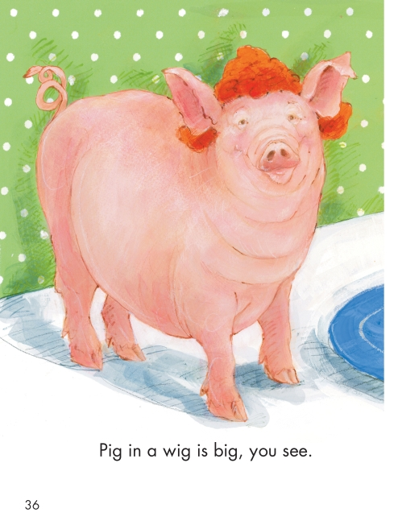
Page 36 from Reading Street (0-328-10828-6) by Pearson Scott Foresman
Sample Code:
(Show/Hide)
<pagenum id="id4509977">36</pagenum>
<p><sent>Pig in a wig is big, you see.</sent></p>
Illustrated Example 2
Page Sample:
(Show/Hide)
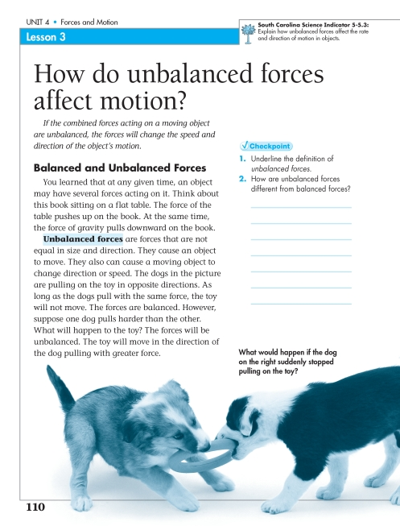
Page 110 from Science South Carolina (0-328-26177-7) by Pearson Scott Foresman
Sample Code:
(Show/Hide)
<level2>
<pagenum id="IDASIXQ">110</pagenum>
<h2>Lesson 3 How do unbalanced forces affect motion?</h2>
<sidebar render="optional">
<img src="images/thruout/toclz.png" alt="Palm Tree icon" width="28"
height="37"/>
<hd>South Carolina Science Indicator 5-5.3:</hd>
<p><sent>Explain how unbalanced forces affect the rate and direction
of motion in objects.</sent></p>
</sidebar>
<p><sent><em>If the combined forces acting on a moving object are unbalanced,
the forces will change the speed and direction of the object's
motion.</em></sent></p>
<level3>
<h3>Balanced and Unbalanced Forces</h3>
<p><sent>You learned that at any given time, an object may have several
forces acting on it.</sent> <sent>Think about this book sitting
on a flat table.</sent> <sent>The force of the table pushes up on
the book.</sent> <sent>At the same time,the force of gravity pulls
downward on the book.</sent></p>
<p><sent><strong>Unbalanced forces</strong> are forces that are notequal
in size and direction.</sent> <sent>They cause an object to move.
</sent> <sent>They also can cause a moving object to change direction
or speed. </sent> <sent>The dogs in the picture are pulling on the
toy in opposite directions.</sent> <sent>As long as the dogs pull
with the same force, the toy will not move.</sent> <sent>The forces
are balanced.</sent> <sent>However, suppose one dog pulls harder
than the other.</sent> <sent>What will happen to the toy?</sent>
<sent>The forces will be unbalanced.</sent> <sent>The toy will move
in the direction of the dog pulling with greater force.</sent></p>
<imggroup>
<caption><sent>What would happen if the dog on the right
suddenly stopped pulling on the toy?</sent></caption>
<img src="images/U09C04/p110-001.png"
alt="two puppies playing" width="650" height="253"/>
</imggroup>
<level4>
<h4>Checkpoint</h4>
<list type="ol">
<li>1. Underline the definition of <em>unbalanced forces</em>.</li>
<li>2. How are unbalanced forces different from balanced forces? ____</li>
</list>
<!-- ... -->
</level4>
</level3>
</level2>
Information Object: Span
Definition
A generic tag to define a section of inline text. The <span> element can be used to tag one or more letters or words, a phrase, a sentence, or even a series of sentences, but not an entire paragraph, which comprises a block of text. (The <div> element is the generic counterpart to <span> for block use.) <span> is often used to mark inline text to which styles are to be applied. The class attribute may be used to provide detail on its use, as in the example below.
Markup
Use when no suitable tag exists for an unusual situation.
Syntax
DTD Reference
<span>...</span>
Assume the print book includes occasional letters or words that are printed in red, while the rest of the text is in black, and it is important for these letters to be identified as they are examples of typographical errors. The <span> tag could be used to mark these letters and identify them as errors.
Examples
Example 1
<p>The most common errors are repeti<span
class="typo">i</span>tions of letters and <span
class="typo">and</span> words.</p>
Illustrated Example 1
Page Sample:
(Show/Hide)
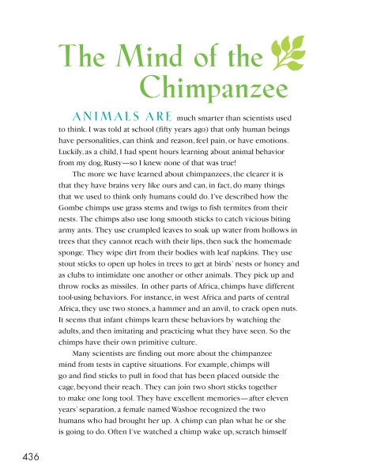
Page 436 from Reading Street (0-328-10839-1) by Pearson Scott Foresman
Sample Code:
(Show/Hide)
<level4>
<pagenum id="id4670043">436</pagenum>
<h4><span class="green">The Mind of the Chimpanzee</span></h4>
<p><span class="blue">Animals are</span> much smarter than scientists
used to think. I was told at school (fifty years ago) that only
human beings have personalities, can think and reason, feel pain,
or have emotions. Luckily, as a child, I had spent hours learning
about animal behavior from my dog, Rusty—so I knew none of that
was true!</p>
<p>The more we have learned about chimpanzees, the clearer it is that
they have brains very like ours and can, in fact, do many things
that we used to think only humans could do. I've described how the
Gombe chimps use grass stems and twigs to fish termites from their
nests. The chimps also use long smooth sticks to catch vicious biting
army ants. They use crumpled leaves to soak up water from hollows
in trees that they cannot reach with their lips, then suck the
homemade sponge. They wipe dirt from their bodies with leaf napkins.
They use stout sticks to open up holes in trees to get at birds'
nests or honey and as clubs to intimidate one another or other animals.
They pick up and throw rocks as missiles. In other parts of Africa,
chimps have different tool-using behaviors. For instance, in west
Africa and parts of central Africa, they use two stones, a hammer
and an anvil, to crack open nuts. It seems that infant chimps learn
these behaviors by watching the adults, and then imitating and practicing
what they have seen. So the chimps have their own primitive culture.</p>
<p>Many scientists are finding out more about the chimpanzee mind from
tests in captive situations. For example, chimps will go and find
sticks to pull in food that has been placed outside the cage, beyond
their reach. They can join two short sticks together to make one
long tool. They have excellent memories—after eleven years' separation,
a female named Washoe recognized the two humans who had brought
her up. A chimp can plan what he or she is going to do. Often I've
watched a chimp wake up, scratch himself</p>
<!-- ... -->
</level4>
Information Object: Strong Emphasis
See Information Object: Emphasis. A class attribute may be used to identify the degree of emphasis: <em class='x'>.
Information Object: Subscript and Superscript
Definition
Subscript and superscript characters are those, in 'Western scripts', written below or above 'normal' text, respectively.
Markup
These elements can be used recursively, that is you may use <sup> inside <sup>, for example; they can also be intermixed (e.g., <sub> inside <sup>). It is recommended that the MathML extension be used for mathematical formulas (details forthcoming).
Syntax
<sub>...</sub> or <sup>...</sup>
Examples
Example 1
<p>Scientists maintain that global warming is due primarily to an increase in
atmospheric concentrations of CO<sub>2</sub>.</p>
Example 2
<p>Perhaps the best-known formula of our day is Einstein's
E=mc<sup>2</sup>.</p>
Example 3
<p>As an example of recursive use, the expression e to the x squared would be
rendered as: e<sup>x<sup>2</sup></sup>.</p>
Illustrated Example 1
Page Sample:
(Show/Hide)
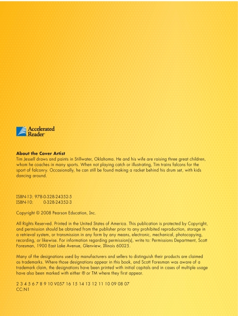
Page 1 from Reading Street (0-328-10839-1) by Pearson Scott Foresman
Sample Code:
(Show/Hide)
<pagenum id="id4626855">2</pagenum>
<imggroup>
<img src="images/thruout/ar.png" alt="Accelerated Reader Icon"
height="21" width="26"/>
</imggroup>
<p>Accelerated Reader<sup>®</sup></p>
<level3>
<h3>About the Cover Artist</h3>
<p>Tim Jessell draws and paints in Stillwater, Oklahoma. He and his wife
are raising three great children, whom he coaches in many sports.
When not playing catch or illustrating, Tim trains falcons for the
sport of falconry. Occasionally, he can still be found making a
racket behind his drum set, with kids dancing around. </p>
<p>ISBN-13: 978-0-328-24352-5</p>
<p>ISBN-10: 0-328-24352-3</p>
<p>Copyright © 2008 Pearson Education, Inc.</p>
<p>All Rights Reserved. Printed in the United States of America. This
publication is protected by Copyright, and permission should be
obtained from the publisher prior to any prohibited reproduction,
storage in a retrieval system, or transmission in any form by any
means, electronic, mechanical, photocopying, recording, or likewise.
For information regarding permission(s), write to: Permissions
Department, Scott Foresman, 1900 East Lake Avenue, Glenview, Illinois
60025. </p>
<p>Many of the designations used by manufacturers and sellers to distinguish
their products are claimed as trademarks. Where those designations
appear in this book, and Scott Foresman was aware of a trademark
claim, the designations have been printed with initial capitals and
in cases of multiple usage have also been marked with either ® or
TM where they first appear. </p>
<p>2 3 4 5 6 7 8 9 10 V057 16 15 14 13 12 11 10 09 08 07</p>
<p>CC:N1</p>
<!-- ... -->
</level3>
Illustrated Example 2
Page Sample:
(Show/Hide)
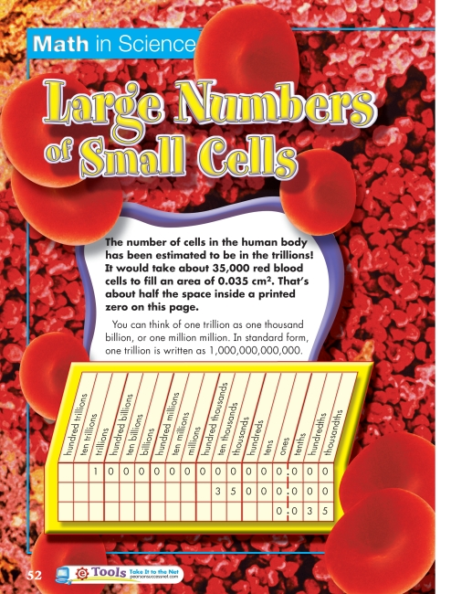
Page 52 from Science (0-328-34506-2) by Pearson Scott Foresman
Sample Code:
(Show/Hide)
<level3>
<pagenum id="IDA13RN">52</pagenum>
<h3>Math In Science Large Number of Small Cells</h3>
<p><strong>The number of cells in the human body has been estimated to
be in the trillions! It would take about 35,000 red blood cells to
fill an area of 0.035 cm<sup>2</sup>. That's about half the space
inside a printed zero on this page. </strong></p>
<p>You can think of one trillion as one thousand billion, or one million
million. In standard form, one trillion is written as 1,000,000,000,000.</p>
<table>
<thead>
<tr>
<th>hundred trillions</th>
<th>ten trillions</th>
<th>trillions</th>
<th>hundred billions</th>
<th>ten billions</th>
<th>billions</th>
<th>hundred millions</th>
<th>ten millions</th>
<th>millions</th>
<th>hundred thousands</th>
<th>ten thousands</th>
<th>thousands</th>
<th>hundreds</th>
<th>tens</th>
<th>ones</th>
<th>tenths</th>
<th>hundredths</th>
<th>thousandths</th>
</tr>
</thead>
<tbody>
<tr>
<td> </td>
<td> </td>
<td>1</td>
<td>0</td>
<td>0</td>
<td>0</td>
<td>0</td>
<td>0</td>
<td>0</td>
<td>0</td>
<td>0</td>
<td>0</td>
<td>0</td>
<td>0</td>
<td>0</td>
<td>0</td>
<td>0</td>
<td>0</td>
</tr>
<tr>
<td> </td>
<td> </td>
<td> </td>
<td> </td>
<td> </td>
<td> </td>
<td> </td>
<td> </td>
<td> </td>
<td> </td>
<td>3</td>
<td>5</td>
<td>0</td>
<td>0</td>
<td>0</td>
<td>0</td>
<td>0</td>
<td>0</td>
</tr>
<tr>
<td> </td>
<td> </td>
<td> </td>
<td> </td>
<td> </td>
<td> </td>
<td> </td>
<td> </td>
<td> </td>
<td> </td>
<td> </td>
<td> </td>
<td> </td>
<td> </td>
<td>0</td>
<td>0</td>
<td>3</td>
<td>5</td>
</tr>
</tbody>
</table>
<img src="images/U11C00/pr30-002.png" width="170" height="27"
alt="tools icon"/>
<!-- ... -->
</level3>
Illustrated Example 3
Page Sample:
(Show/Hide)
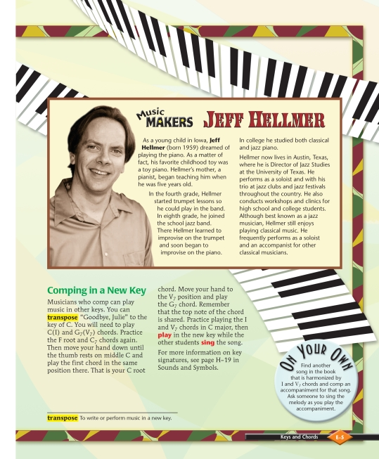
Page E-5 from Making Music (0-382-36576-3) by Pearson Scott Foresman
Sample Code:
(Show/Hide)
<pagenum id="IDAPRDS" page="special">E-5</pagenum>
<sidebar render="optional">
<hd>Music Makers Jeff Hellmer</hd>
<p>As a young child in Iowa, <strong>Jeff Hellmer</strong> (born 1959)
dreamed of playing the piano. As a matter of fact, his favorite
childhood toy was a toy piano. Hellmer's mother, a pianist, began
teaching him when he was five years old.</p>
<p>In the fourth grade, Hellmer started trumpet lessons so he could play
in the band. In eighth grade, he joined the school jazz band. There
Hellmer learned to improvise on the trumpet and soon began to improvise
on the piano. In college he studied both classical and jazz piano.</p>
<p>Hellmer now lives in Austin, Texas, where he is Director of Jazz
Studies at the University of Texas. He performs as a soloist and
with his trio at jazz clubs and jazz festivals throughout the country.
He also conducts workshops and clinics for high school and college
students. Although best known as a jazz musician, Hellmer still
enjoys playing classical music. He frequently performs as a soloist
and an accompanist for other classical musicians.</p>
<imggroup>
<img src="images/U08C01/pE5-001.png" alt="Photograph of Jeff
Helmer " width="180" height="282"/>
</imggroup>
</sidebar>
<level3>
<h3>Comping in a New Key</h3>
<p>Musicians who comp can play music in other keys. You can <em>transpose</em>
"Goodbye, Julie" to the key of C. You will need to play C(I) and
G<sub>7</sub> (V<sub>7</sub>) chords. Practice the F root and
C<sub>7</sub> chords again. Then move your hand down until the thumb
rests on middle C and play the first chord in the same position there. That
is your C root chord. Move your hand to the V<sub>7</sub> position
and play the G<sub>7</sub> chord. Remember that the top note of the
chord is shared. Practice playing the I and V<sub>7</sub> chords in
C major, then <strong>play</strong> in the new key while the other
students <strong>sing</strong> the song.</p>
<p>For more information on key signatures, see page H-19 in Sounds and
Symbols.</p>
<sidebar render="optional">
<hd>On Your Own</hd>
<p>Find another song in the book that is harmonized by I and V<sub>7</sub>
chords and comp an accompaniment for that song. Ask someone to sing
the melody as you play the accompaniment.</p>
</sidebar>
<sidebar render="optional">
<dl>
<dt>transpose</dt>
<dd>To write or perform music in a new key.</dd>
</dl>
</sidebar>
<!-- ... -->
</level3>
Illustrated Example 4
Page Sample:
(Show/Hide)
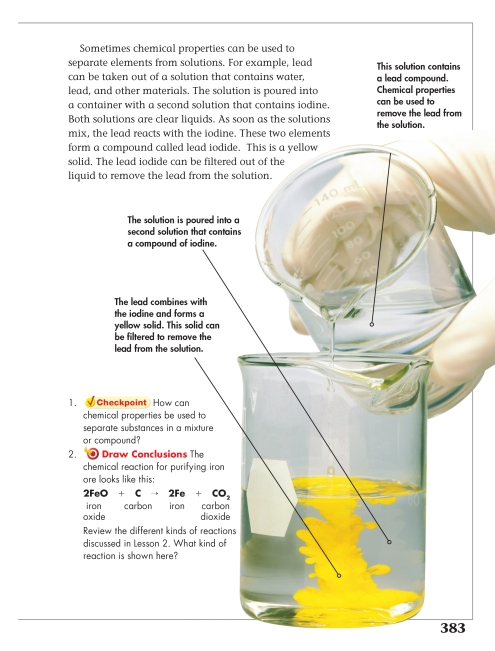
Page 383 from Science (0-328-34506-2) by Pearson Scott Foresman
Sample Code:
(Show/Hide)
<pagenum id="IDALUNN">383</pagenum>
<p>Sometimes chemical properties can be used to separate elements from
solutions. For example, lead can be taken out of a solution that
contains water, lead, and other materials. The solution is poured
into a container with a second solution that contains iodine. Both
solutions are clear liquids. As soon as the solutions mix, the lead
reacts with the iodine. These two elements form a compound called
lead iodide. This is a yellow solid. The lead iodide can be filtered
out of the liquid to remove the lead from the solution.</p>
<imggroup>
<img src="images/U15C04/p383-001.png" alt="mixing solutions"
width="489" height="717"/>
</imggroup>
<list type="pl">
<li>1. <strong>Checkpoint</strong> How can chemical properties be used
to separate substances in a mixture or compound?</li>
<li>2. <img src="images/thruout/tocts.png" width="41" height="37" alt="target
icon"/><strong>Draw Conclusions</strong> The chemical reaction for
purifying iron ore looks like this: 2FeO iron oxide + C carbon
<img src="images/U15C04/p384-002.png" alt="Yields"
width="39" height="38"/> 2Fe iron + CO<sub>2</sub> carbon
dioxide Review the different kinds of reactions discussed in Lesson
2. What kind of reaction is shown here?</li>
</list>
Information Object: Word
Definition
A character or group of characters normally enclosed by two spaces.
Markup
This element can be used to mark each word in a digital talking book so that the audio and text files can be synchronized at the word level. Tagging of individual words would normally be done by a production tool (if at all), rather than by hand.
Syntax
<w>...</w>
Examples
Example 1
<p><sent><w>On</w> <w>the</w>
<w>thirteenth</w> <w>of</w> <w>January</w>,
<w>1422</w>, <w>the</w> <w>two</w>
<w>armies</w> <w>met</w> <w>on</w>
<w>a</w> <w>spacious</w> <w>plain</w>
<w>near</w> <w>Kamnitz</w>.</sent>
<sent><w>Zisca</w> <w>appeared</w>
<w>in</w> <w>the</w> <w>centre</w>
<w>of</w> <w>his</w> <w>front</w>
<w>line</w>, <w>guarded</w>, <w>or</w>
<w>rather</w> <w>conducted</w>, <w>by</w>
<w>a</w> <w>horseman</w> <w>on</w>
<w>each</w> <w>side</w>, <w>armed</w>
<w>with</w> <w>a</w> <w>pole</w>
<w>axe</w>.</sent></p>
Illustrated Example 1
Page Sample:
(Show/Hide)
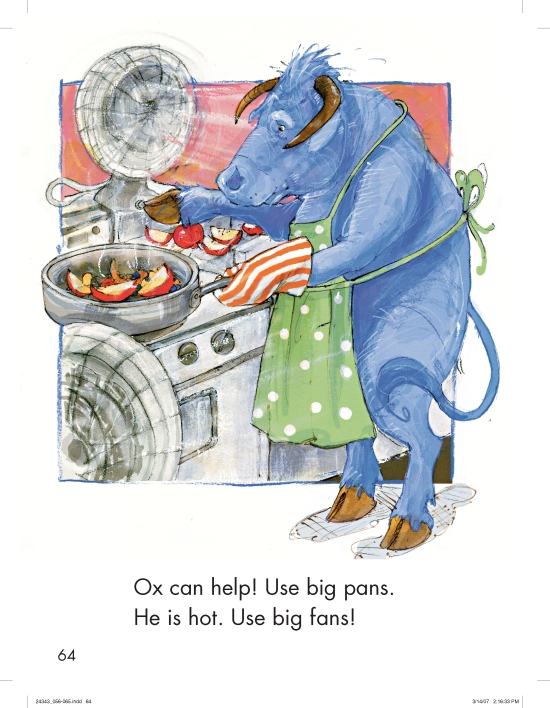
Page 64 from Reading Street (0-328-24343-4) by Pearson Scott Foresman
Sample Code:
(Show/Hide)
<pagenum id="id4511713">64</pagenum>
<imggroup>
<img alt="The ox cooking in a big pan on the stove as a fan blows
on him." src="images/U04C03/64.png" width="740" height="852"/>
<prodnote render="optional"><w>The</w> <w>ox</w> <w>cooking</w>
<w>in</w> <w>a</w> <w>big</w> <w>pan</w> <w>on</w> <w>the</w>
<w>stove</w> <w>as</w> <w>a</w> <w>fan</w> <w>blows</w>
<w>on</w> <w>him</w>.</prodnote>
</imggroup>
<p><w>Ox</w> <w>can</w> <w>help</w>! <w>Use</w> <w>big</w> <w>pans</w>.
</p>
<p><w>He</w> <w>is</w> <w>hot</w>. <w>Use</w> <w>big</w> <w>fans</w>!
</p>
Comments and Alternative Examples:
(Show/Hide)<abbr>is a NIMAS-optional element.1. In abbreviations, a period that is part of the abbreviation should be included in the
<abbr>tag, however, punctuation for the surrounding sentence should not be included. This can be confusing, particularly in situations where a sentence ends with an abbreviation. In these situations, err on the side of including the proper punctuation for the sentence.2. While the use of optional tags is recommended, if one is only using the required tag set, the above section might be formatted as follows:
<level5> <pagenum id="IDANOLN">53</pagenum> <list type="ol"> <li>natural branch, or a vase filled with white lilies. Feel free to alter the subject to emphasize the kind of line you have chosen.</li> </list> <sidebar render="optional"> <hd>Computer Option</hd> <p>Choose at least two objects with different visual weights, such as a feather and a book, and arrange them in a still life. Using a paint program, open an 8 1/2" x 11" blank canvas. Using only the color black, experiment with a combination of different types and sizes of brushes to find the style that will describe each object best. Use light, thin brushstrokes to express any delicate qualities of the objects, and bolder lines where the objects appear heavier. Save and print for critique.</p> </sidebar> <imggroup> <img src="images/p053-001.png" width="198" height="261" alt=""/> <caption>3-39 Student work, Ian Brennan. Marker, 24" x 18" (61 x 45.7 cm).</caption> </imggroup> <imggroup> <img src="images/p053-002.png" width="198" height="261" alt=""/> <caption>3-40 Student work, David Jou. Marker, 24" x 18" (61 x 45.7 cm).</caption> </imggroup> </level5> <level5> <h5>Evaluate It</h5> <list type="ul"> <li> How would you describe the linear quality of your images?</li> <li>In what ways is the linear quality of your images constant and expressive?</li> <li>Which images are most successful? Why?</li> </list> </level5> <level5> <h5>Art History - Studio Background</h5> <p>For centuries, the great masters of China and Japan have explored the expressive qualities of line. The brushstroke is the single most important part of their craft. The Japanese often employ line in the interest of another of their passions, satire. Consider this detail from the <em>Scroll of Frolicking Animals (Choju Giga).</em> Here the artist has relied on fluid lines to describe the flower vase as well as the droll expression and pose of the Buddha-frog. Compare the feeling of these lines with those in <em>Dr. J. Robert Oppenheimer</em><strong>(fig. 3-17, page 40).</strong> In what different ways do the artists distort visual information to create drama?</p> <imggroup> <img src="images/p053-003.png" width="236" height="146" alt=""/> <caption>3-41 <strong>This scroll is one of several in a series that depict cavorting animals engaged in satirical human-like behavior.</strong> <em>Monkeys Worshiping a Frog</em> (detail), from Choju Giga Handscrolls attributed to Toba Sojo, c. late 12th century. Ink on paper, detail c. 12" x 18" (30.5 x 45.7 cm). <sup>©</sup> Barney Burstein Collection/Corbis.</caption> </imggroup> </level5>